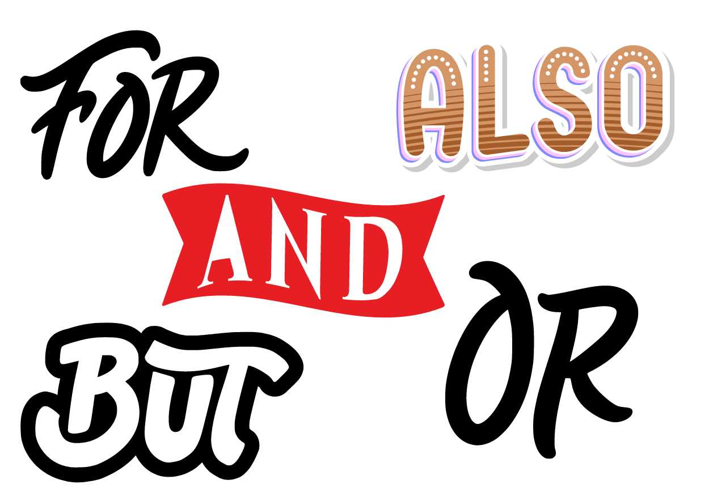

The English Language has some indispensable linkers. They are called Conjunctions. Conjunctions perform the following functions in a sentence:
1. Join words
2. Join phrases
3. Join parts of sentences
4. Join Clauses
Today we will take a close look at the following types of linkers and their uses:
1. Coordinating Conjunctions
2. Correlative Conjunctions